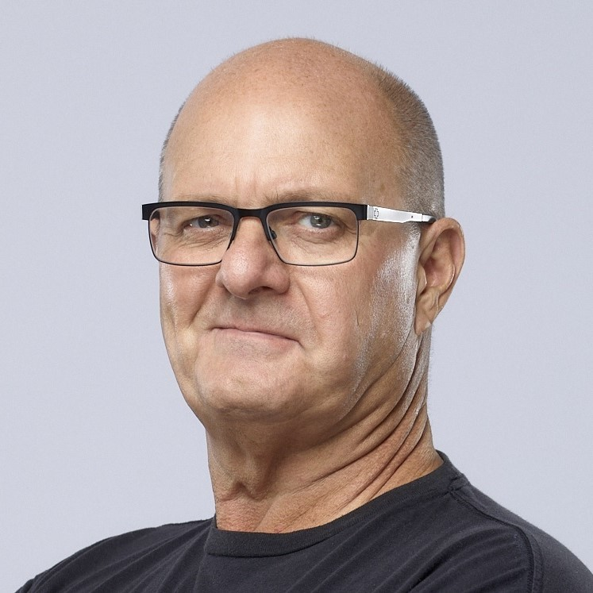
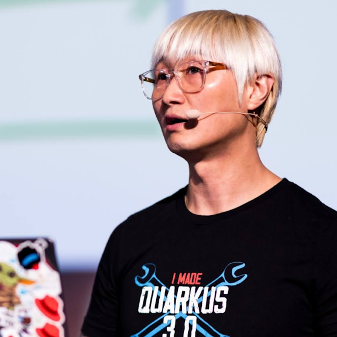
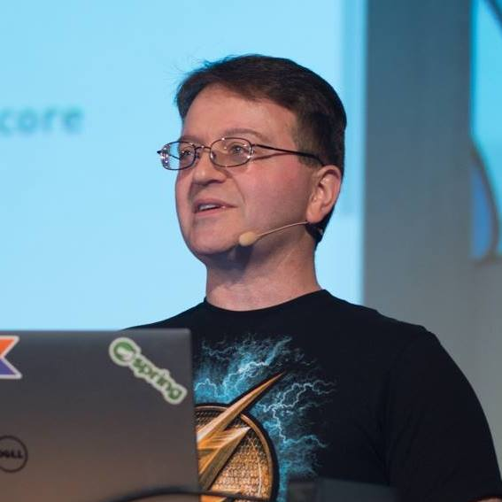

March 27, 8:30 AM PST
 Americas
Americas
RSVP Now
Agenda
| Schedule | Session | Speakers |
|---|---|---|
| 27-Mar-24 08:30 08:35 AM | Welcome to JDConf Americas | Host: Bruno Borges, Microsoft | 27-Mar-24 08:35 09:00 AM | JDConf Technical Keynote |
Julia Liuson, Microsoft
Josh Long, Broadcom
Mark Heckler, Microsoft
|
| 27-Mar-24 09:00 09:30 AM | Cache Me If You Can: Speed Up Your JVM With Project Valhalla | Theresa Mammarella, IBM |
| 27-Mar-24 09:30 10:00 AM | Empowering Quarkus Applications with AI and OpenTelemetry on Kubernetes |
Daniel Oh, Red Hat
Brian Benz, Microsoft
|
| 27-Mar-24 10:00 10:30 AM | Paving a Painless Path to Production AI in Your Java Applications | Mark Heckler, Microsoft |
| 27-Mar-24 10:30 11:00 AM | From Zero to Java Hero: Visual Studio Code Mastery | Loiane Groner, Citibank |
| 27-Mar-24 11:00 11:30 AM | Instant Coffee: How to Eliminate Java Performance Warmup | Simon Ritter, Azul Systems |
| 27-Mar-24 11:30 11:55 AM | Spring AI: Streamlining Java Enterprise AI Development and Deployment | Mark Pollack, Broadcom |
| 27-Mar-24 11:55 11:59 AM | Closing Remarks | Bruno Borges, Microsoft |
Speakers

Brian Benz
Java Champion and a Cloud Advocate at Microsoft
Brian is a Java Champion and a Cloud Advocate at Microsoft, helping developers get the most out of Azure. Before Joining Microsoft, he was a program manager, evangelist, solution architect, consultant, developer, and author at IBM, Deloitte, and other companies. Find him on Twitter @bbenz. A current list of Brian's talks can be found at https://aka.ms/brianspeaking.
Bruno Borges
Principal Program Manager, Microsoft
Greetings, I’m Bruno, a Brazilian living in Vancouver, Canada. I’m a Product Manager at Microsoft. We help Microsoft internal teams and Azure customers to optimize Java workloads for better performance and lower cost. We also ship the Microsoft Build of OpenJDK. Before that I was on Azure DevRel, a Cloud Developer Engagement PM at Oracle, and a Java developer at heart. But most importantly, I'm opinionated!.

Daniel Oh
Senior Principal Developer Advocate at Red Hat
Daniel Oh is a Java Champion and Senior Principal Developer Advocate at Red Hat to evangelize developers for building cloud-native apps and serverless ob Kubernetes ecosystems. He's also contributing to various cloud open-source projects and ecosystems as a CNCF ambassador for accelerating DevOps adoption in enterprises. He's speaking at lots of technical seminars, workshops, and meetups to elaborate on new emerging technologies for enterprise developers & DevOps teams.

Josh Long
Spring Developer Advocate at Broadcom
Josh (@starbuxman) has been the first Spring Developer Advocate since 2010. Josh is a Java Champion, author of 6 books (including O’Reilly’s “Cloud Native Java: Designing Resilient Systems with Spring Boot, Spring Cloud, and Cloud Foundry” and “Reactive Spring”) and numerous best-selling video training (including “Building Microservices with Spring Boot Livelessons” with Spring Boot co-founder Phil Webb), and an open-source contributor (Spring Boot, Spring Integration, Spring Cloud, Activiti and Vaadin, etc), a podcaster (“A Bootiful Podcast”) and a YouTuber.
Julia Liuson
President of Microsoft's Developer Division and GitHub
Julia Liuson is President of Microsoft’s Developer Division where she leads the technical and business strategy, product development and engineering teams for Visual Studio, Visual Studio Code, all Microsoft programming languages and runtime (.NET and C#, TypeScript, OpenJDK, C++, Python and more), Azure DevOps, Azure SDKs, and Azure Application Development PaaS and Serverless offerings. She also manages GitHub as an independent operating entity.

Loiane Groner
Citibank | GDE | MVP | Java Champion | Oracle ACE
Loiane Groner is a Development Manager at Citibank and has authored books for Packt Publishing. Google Developer Expert in Angular, Microsoft MVP in Developer Technologies, Oracle ACE, and Java Champion. In her spare time, she loves contributing to the community, and she publishes tech videos on Youtube and creates free programming courses at https://loiane.training.

Mark Heckler
Principal Cloud Developer Advocate for Java/JVM Languages at Microsoft
Mark Heckler, MBA is a software developer & Principal Cloud Developer Advocate for Java/JVM Languages at Microsoft, conference speaker, Java Champion, and Kotlin Developer Expert focused on developing innovative production-ready software at velocity for cloud and edge computing platforms. He has worked with key players in numerous industries and public sector organizations to develop and deliver critical capabilities on time and on budget. Mark is an open source contributor and author of Spring Boot: Up and Running (https://bit.ly/springbootbook) and can be found on Twitter/X @mkheck.

Mark Pollack
Spring Engineer at Broadcom
Dr. Mark Pollack has been involved with the Spring (Java) framework since 2003, contributing JMS functionality. He is the founder and technical lead of the Spring CLI and Spring AI projects, focusing on improving Java application development with an emphasis on AI integration and developer-focused command-line tooling. His previous roles include being the founder and technical lead of several notable Spring projects, including Spring Cloud Data Flow, Spring XD, Spring Data, Spring Shell, Spring AMQP, and Spring.NET. Before his work with Spring, Mark was involved in offline computing in high-energy nuclear physics at Brookhaven National Laboratory and also served as a technical lead in the financial services industry, concentrating on front-office trading systems.
Simon Ritter
Deputy CTO, Azul Systems
Simon Ritter is the Deputy CTO of Azul Systems. Simon has been in the IT business since 1984 and holds a Bachelor of Science degree in Physics from Brunel University in the U.K. Simon joined Sun Microsystems in 1996 and started working with Java technology from JDK 1.0; he has spent time working in both Java development and consultancy. Having moved to Oracle as part of the Sun acquisition, he managed the Java Evangelism team for the core Java platform, Java for client applications and embedded Java. Now at Azul, he continues to help people understand Java as well as Azul’s JVM technologies and products. Simon has twice been awarded Java Rockstar status at JavaOne and is a Java Champion. He currently represents Azul on the JCP Executive Committee and on the Java SE Expert Group (JSR 379, 383 and 384).
Theresa Mammarella
Software Engineer at IBM
Theresa Mammarella is a software engineer working on the Eclipse OpenJ9 JVM at IBM. She enjoys helping developers harness the full potential of their tools to create innovative, secure and performant solutions. Theresa is a frequent conference speaker and community organizer, giving talks around the world at Jfokus, Devoxx, DevNexus, JavaZone, KCDC, Java User Groups and more.
Stay connected
Follow the Microsoft for Java developers blog and Java at Microsoft for the latest news and updates about JDConf.
Follow the event at #JDConf